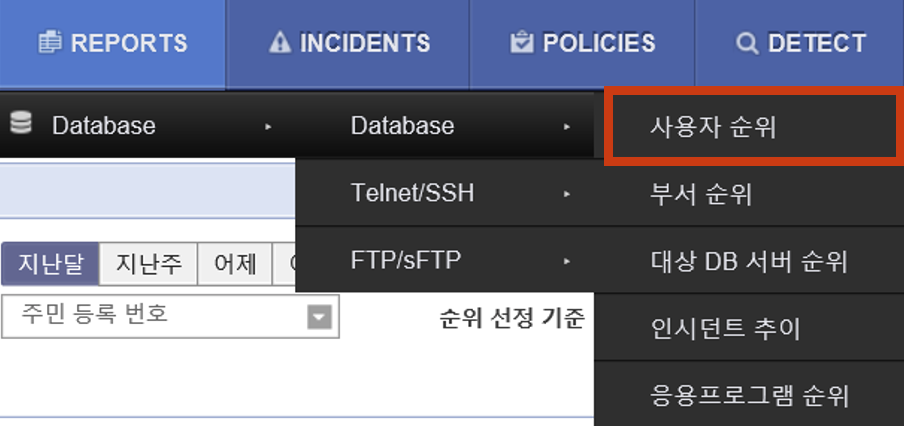

QUICK GUIDE#
Contents#
Q1. 사용자가 특정 PostgreSQL DB로 접근하는 것을 차단하고 싶습니다.
Q2. 사용자가 PostgreSQL DB 내 ‘vip_info’ 테이블 접근 시 차단하고 싶습니다.
Q3. 사용자가 PostgreSQL DB 내 ‘social number’ 컬럼에 접근 시 차단하고 싶습니다.
Q4. 주민등록번호 10건 이상 조회 시 차단하고 싶습니다.
Q5. 지난달(ex. 2022.06.01 - 2022.06.30) 동안 주민등록번호 10건 이상조회된 쿼리와 쿼리결과값을 조회하고 싶습니다.
Q6. 지난달(ex. 2022.06.01 - 2022.06.30) 동안 (쿼리 수, 매칭된 패턴 수를 기준으로) 주민등록번호를 가장 많이 조회한 사용자를 리포팅하고 싶습니다.
REPORTS > Database > 사용자 순위를 클릭합니다.
사용자 순위 필터에서 버튼을 클릭하고 아래 패턴 이름과 순위 선정 기준을 선택한 후 을 클릭합니다.
(* 아래 이미지는 ‘패턴 개수’를 순위 선정 기준으로 선택한 경우입니다.)
패턴 이름 : 주민 등록 번호
순위 선정 기준 :
① 쿼리 수 기준 → SQL 개수 선택
② 매칭된 패턴 수 기준 → 패턴 개수 선택
다음은 (매칭된 패턴 수를 기준으로) 주민등록번호를 가장 많이 조회한 사용자에 대한 검색결과입니다.
메 뉴 |
서브 메뉴1 |
기 능 |
|---|---|---|
접근 통제 |
세션 로그 |
세션을 기준으로 세션정보 및 세부 SQL문 검색 |
SQL 로그 |
개별적인 쿼리 및 결과값 검색 |
|
Telnet/FTP/RDP 로그 |
Telnet/FTP/RDP 서버 상의 개인정보 조회 및파일 다운로드 이력 검색 |
|
PC 통제 |
검 사 |
개인정보 파일 패턴 검사 |
유출 통제 |
개인정보 반출 허용/차단에 대한 로그 조회 |